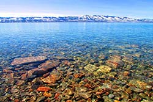

Fish Haven
Summary
Currently:
High: °F
Wind Chill: °F
Humidity: %
Wind: MPH
Five Day Forecast

°F
°F
°F
°F
°F
These are most important events in Fish Haven:
Incredible facts you should know about Utah's Bear Lake
Spanning the border of Utah and Idaho, Bear Lake, nicknamed "the Caribbean of the Rockies" for its stunning turquoise-blue water, is a destination everyone should put on their bucket list. Bear Lake offers hiking, bike riding, boating, fishing, bird watching and cave exploring — and that's just scratching the surface.

If you've never been to Bear Lake, you owe it to yourself to go, because it's not just another mountain lake. Here are some of the things that make Bear Lake unique.
When you crest the mountain summit and catch a first glimpse of the lake, the rich color is the first thing you notice. "Bear Lake contains abundant suspended microscopic particles of white-colored calcium carbonate (lime) that reflect the water’s natural blue color back to the surface, giving the lake its intense turquoise-blue color," explains information from the Utah Geological Survey.
The lake has 48 miles of shoreline and there are sandy beaches galore. Even when the water might be too cold for swimming, there are opportunities for camping and picnicking in scenic splendor.
Read full article.Contact Us
Address:
Weather GO!
123 Main Street
Franklin, MI 87654
Phone:
(801) 555-1234
email:
contact@weathergo.net